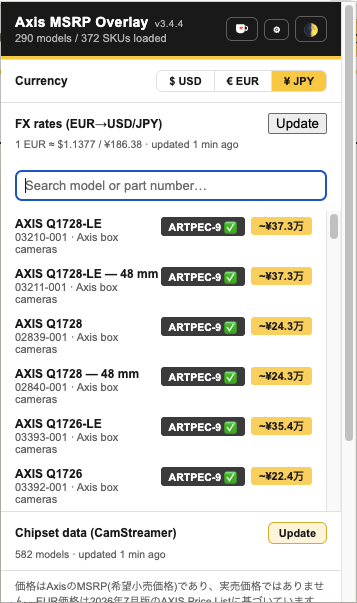

axis.com のあらゆる画面を、
ひとつの価格カタログで
製品セレクター、検索、製品／カテゴリーページ、製品比較表 — 通貨を切り替えても、チップセットデータを更新しても、チップセットフィルターを操作しても、ページの再読み込みなしにその場で反映されます。

MSRP 価格とチップセットのインラインバッジ
認識できた製品タイルには黄色い価格バッジが付き、カーソルを合わせると Axis の品番が表示されます。CamStreamer にデータがあるモデルにはチップセットのラベルも付き、CamStreamer 対応機にはチェックマークが入ります。

3 通貨の切り替えと、ツールバーからの検索
ワンクリックで € EUR ／ $ USD ／ ¥ JPY をすべての画面で一括切り替え。EUR が唯一の「確定した」定価で、USD と JPY は常に為替から算出した概算値です。そのため先頭に ~ を付け、円は 6 桁の数字ではなく 万単位に短縮して表示します — たとえば ~¥37.3万。初回起動時の通貨は閲覧中のロケールに合わせて自動設定され（日本語ロケールは JPY、南北アメリカは USD、それ以外は EUR）、ご自身で選び直せばその設定が優先されます。どのページからでもモデル名や品番でカタログ全体を検索でき、ライト／ダークテーマも同じヘッダーから切り替えられます。

複数選択できるチップセットフィルターと画角スライダー
ARTPEC-9／-8／-6-7／それ以前／Ambarella を同時に選択できます — Axis サイト自体のドロップダウンは 1 つしか選べません。CamStreamer 対応をクリックすれば、アプリが実際に動作するチップセット世代がまとめて選ばれます。製品セレクターの同じパネルには最小画角スライダーもあり、必要な広さに届かないカメラを除外できます。画角データがまだ無いモデルは消えずにそのまま表示されるので、取りこぼしがありません。
axis.com の検索結果にもバッジ
モデル名（M1137）でもシリーズ名（Q35）でも、検索結果のタイトルに正確な価格・バリアントの価格帯・「from €X」のいずれかのバッジが付きます。

製品ページ・カテゴリーページにもバッジ
ハブページ（ボックス型カメラ）やシリーズページのモデルタイルには、カード上部に価格＋チップセットのバッジが付きます。単一モデルなら具体的な価格、シリーズ全体のカードなら「from €X」の価格帯です。Axis サイト自身のキャプションを覆い隠すことはありません。

パンくずリストにシリーズの価格帯、比較表には新しい行
シリーズページのパンくずリストに、そのシリーズ全体の価格帯と使われているチップセットがひと目で分かる形で表示されます。同じページの製品比較表を開くと、最上部にチップセットと価格の 2 行が追加され、モデルごとに 1 列ずつ並びます。

日本語を含む axis.com の全ロケールに対応
バッジの配置には CSS クラスと URL のスラッグを使い、英語のテキストとの一致には一切頼っていません。そのためボックス型カメラのように完全に翻訳されたページでも、英語版とまったく同じパンくずの価格帯とカードバッジが表示されます。初回起動時の通貨は閲覧中のロケールに追従し（日本語ページなら JPY、南北アメリカは USD、それ以外は EUR）、ご自身で通貨を選べばその設定が以降ずっと優先されます。

円は 6 桁ではなく万単位で
円建ての金額は 1,000 円単位で切り上げ、万単位に短縮して表示します — ¥93,000 ではなく ~¥9.3万。どの通貨でも価格バッジの大きさが変わらないためです。先頭の ~ は、この金額が日本向けの公表価格表からの引用ではなく、EUR の定価を最新の ECB 参照レートでその場で換算した概算値であることを示しています。¥ JPY に切り替えると、ポップアップの注意書きも日本語に切り替わります。

価格をすべて隠して、他はそのまま
同じ通貨切り替え行にある 4 つ目の 🚫 を選ぶと、拡張機能全体で価格表示が止まります — 製品セレクターのバッジ、検索結果、製品／カテゴリーページ、シリーズのパンくず、2 種類の比較表、ポップアップの一覧、マップツールまで。チップセットバッジ、チップセットフィルター、画角関連の機能はそのまま動くので、価格に関わらない担当者でもカメラ選定ツールとして問題なく使えます。金額を明かさない「安い順」の並び替えも引き続き利用できます。

必要なときは、完全に日本語で
ポップアップ、価格更新ページ、マップツール、そして axis.com に挿入されるすべてのバッジとツールチップ — これらは次の 3 つのいずれかが成り立つと日本語に切り替わります。¥ JPY を選択している、ブラウザーの UI 言語が日本語である、または axis.com の /ja-jp/ ロケールを表示している。言語切り替えを覚えておく必要はなく、開いたままのタブにもその場で反映されます。製品名・型番や ARTPEC、CamStreamer といった用語は、日本語の技術系 UI の慣習どおりローマ字表記のままにしています。